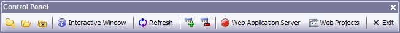

Toolbars
Toolbars provide quick access to commonly used menu commands. In the layout editors they provide a quick way to set properties of objects. Alpha Anywhere includes a variety of System Toolbars. To better suit your needs, you can modify the system toolbars by adding and removing buttons, or create your own custom toolbars and save them in the database.
To find out what a particular Toolbar button does, move the cursor over the button. A Bubble Help description of the button appears.
Toolbars can either be docked to an Alpha Anywhere window edge or float, appear anywhere on the screen. When a toolbar is floating, a title bar appears containing its name.
To make a docked toolbar float, click and drag the toolbar from the Alpha Anywhere Window edge into the screen area.
To dock a floating toolbar, click and drag it to any Alpha Anywhere Window edge, or double-click the toolbar's title bar to quickly dock it at the top of the screen.

Floating Toolbar
In addition to customizing the System Toolbars, you can create your own custom toolbars for forms, browses, and the Print Previews. These toolbars can have user-designed buttons that execute your own Xbasic scripts when clicked.
See Also
Creating Custom Toolbars, How to Design a Custom Toolbar, Editing System Toolbars